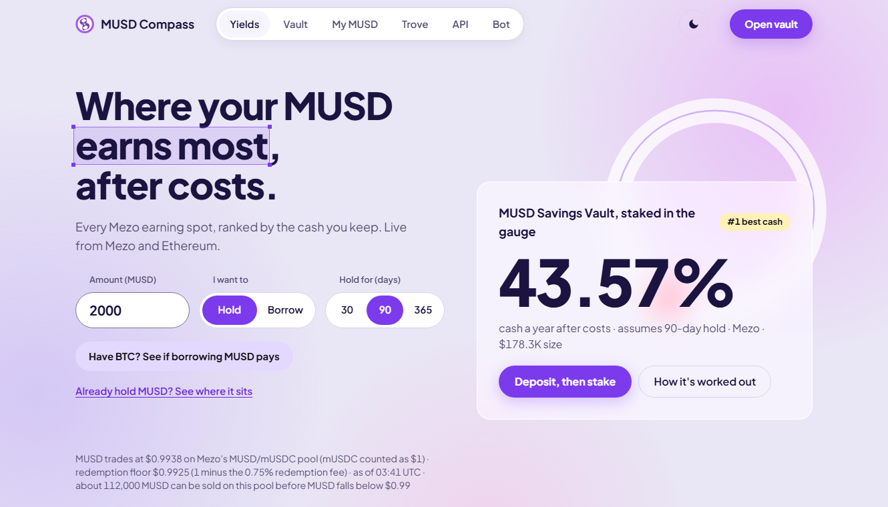
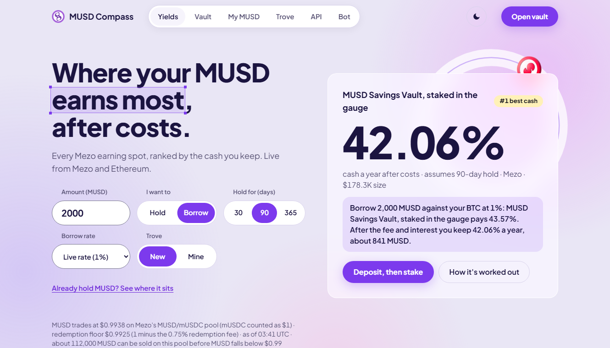
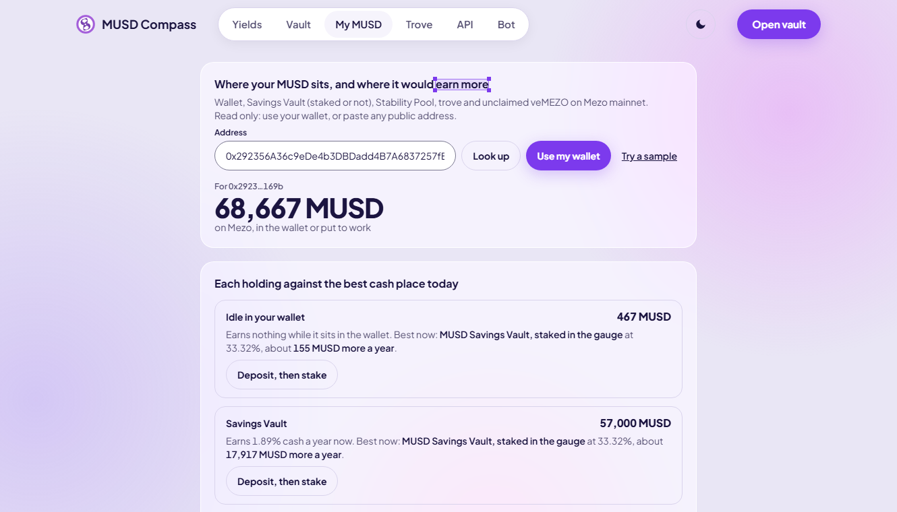

Every place Mezo MUSD can earn, on Mezo and Ethereum, ranked by the cash you keep.

MUSD earns in the Savings Vault, the Stability Pool, six Mezo pools and Mezo-paid pools on Ethereum. None of them use the same yardstick.
Several pools pay in veMEZO, which stays locked for 12 weeks. A large APR can be mostly lock and very little cash.
Going to Ethereum costs a bridge and gas both ways. Borrowed MUSD carries trove interest. On a small deposit that can cancel the yield.
No screen answered: after costs, where do I keep the most cash?

| The review asked for | Shipped |
|---|---|
| Borrow → Earn on mainnet with HintHelpers | A testnet / mainnet switch on /vault. Real HintHelpers hints, one guard, a typed-amount confirmation and a 2,500 MUSD limit. 8 real mainnet transactions. |
| Monitoring, top-up or repay, warnings | /watch alerts in the Telegram bot. Liquidation, redemption and Recovery Mode warnings. Top-up and repay with the ratio before and after. |
| Users outside your own wallets | /stats counts bot users, outside payers, widget sites and API requests. |
| A real mainnet x402 price | 0.01 MUSD per call on Mezo mainnet, with one real mainnet payment. |
| WalletConnect or Mezo Passport | WalletConnect and browser wallets act. Unisat, OKX and Xverse are view only. |
Also added: gauge staking, Mezo pools in the ranking, the MUSD price against the redemption floor, the /proof page, and a new look.
real transactions on Mezo mainnet
transactions on Mezo testnet
unit tests
end-to-end tests
/proof lists every transaction Compass has sent, each linked to the explorer./vault with no wallet, and Compass or the chain refuses each one.Transactions are built in the browser, pass the guard, and are signed by your own wallet.
/stats will show the first outside bot user, payer or widget site./my → Try a sample: a real address's MUSD against the best place for it./vault → Try to break it: four attacks, each refused./proof: every transaction, linked to the explorer.
Free for people. Apps and agents pay 0.01 MUSD per call over x402.